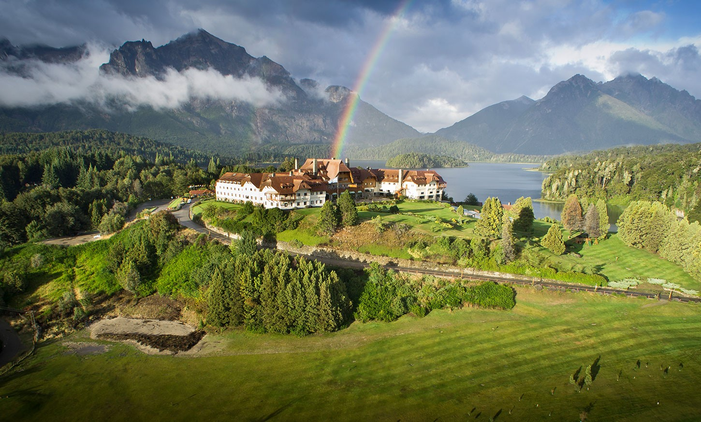

Bienvenidos al Primer Campeonato Internacional de Golf para Juagadores de Futbol
La idea fue/es crear un sitio simple para probar Bootstrap y Flex, y luego tratar de adaptar lo anterior al nuevo diseño.

La idea fue/es crear un sitio simple para probar Bootstrap y Flex, y luego tratar de adaptar lo anterior al nuevo diseño.